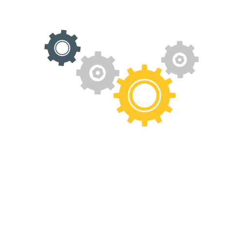
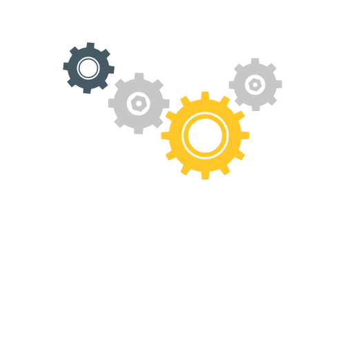
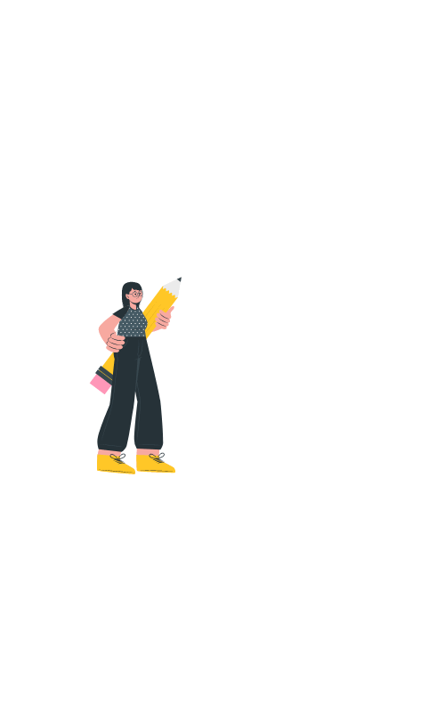
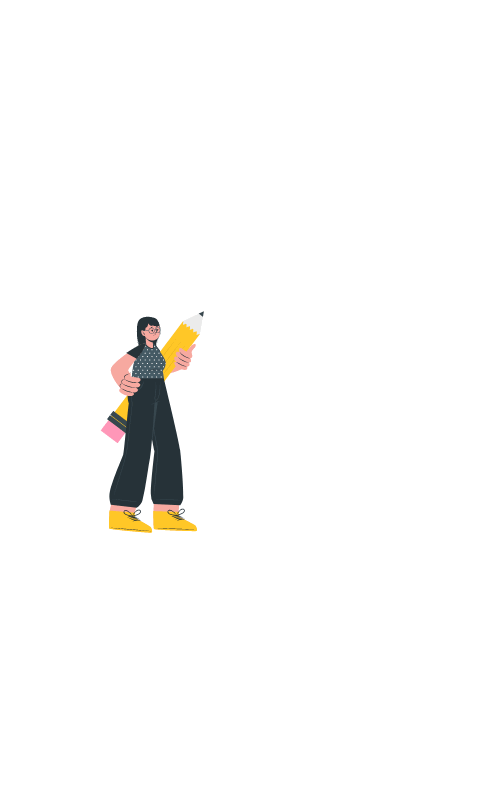

FRANK
Frank arriva in Italia nel 2010 insieme alla sua famiglia dalla Germania. La madre è tedesca, mentre il padre è italiano.

Non ha la cittadinanza, non parla l’italiano e a scuola viene inserito in una classe quarta con i compagni di età inferiore alla sua.

I primi due anni sono molto difficili per Frank, viene isolato dai compagni e non riesce a stringere amicizie. Non partecipa neanche alle feste di classe per le difficoltà economiche della famiglia.

Curioso, coltiva molti interessi e si impegna molto nello studio dell’italiano, perché vuole capire tutto quello di cui gli altri bambini parlano.
 

In prima media la situazione cambia. Frank adesso conosce la lingua e fa amicizia con due ragazzi con cui condivide gli hobby.

Crescendo riesce ad inserirsi tra i gruppi di coetanei. Frequenta il liceo artistico e inizia a lavorare in un’officina meccanica spinto dalla sua passione per i motori.
 

Dopo il liceo inizia a lavorare ufficialmente in officina, dove si distingue per le sue abilità.

Diventa socio di un motorclub e qualche anno dopo viene eletto vicepresidente.